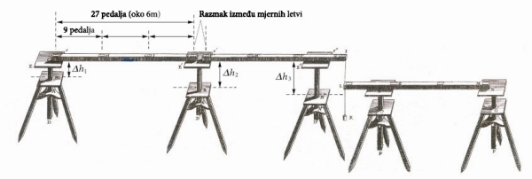

mjerenje duljine baze geodetske trigonometrijske mreže, izravno mjerenje duljine stranice jednog od trokuta trigonometrijske mreže koje se izvodi između dviju istaknutih točaka na Zemlji s približno ravnim terenom između njih. Mjerenje duljine baze iznimno je osjetljivo jer se pogreška nastala u mjerenju prenosi preko više trokuta i višestruko povećava pogrešku cjelokupnoga mjerenja.
Bošković je poznavao radove francuskih znanstvenika koji su se bavili mjerenjem duljine meridijana (Pierrea Bouguera, Alexisa Claudea Clairauta, Charlesa Marie de La Condaminea, Louisa Godina, Jeana Picarda, Pierrea Louisa Moreaua de Maupertuisa, Jean-Dominiquea Cassinija i Jacquesa Cassinija). Oni su duljine trigonometrijskih baza mjerili polaganjem mjernih letava na tlo uz rastegnuto uže u pravcu baze, pri čem su se letve međusobno izravno dodirivale. Neke nedostatke u izvođenju tih mjerenja Bošković je u svojem mjerenju uspio otkloniti.
Za mjerenje duljine baze Bošković i Christopher Maire rabili su tri letve duljine 27 rimskih pedalja (oko 6 m), poprečnog presjeka 7 cm × 5,5 cm izrađene od dijelova staroga jarbola. Na krajevima su bile smještene mjedene pločice s fino urezanom točkom. Svaka letva bila je podijeljena na tri dijela s po 9 pedalja označenih također mjedenim pločicama, a za usporedbu su koristili dvije željezne letve s po 9 pedalja. Temperature su mjerili malim termometrom, a za računanje istezanja željeza zbog promjene temperature koristili su koeficijent istezanja željeza koji je odredio La Condamine. Horizontalnost mjernih letava određivala se s pomoću libela. Kako bi izbjegao mogućnost pomicanja već postavljene letve prilikom polaganja nove, Bošković je postavljao mjerne letve tako da se ne dodiruju. Razmak između točaka dviju susjednih mjernih letava mjerio se šestarom, a duljine otvora šestara odčitavale se transverzalnim mjerilom (ravnalom od mjedi). Kad je teren bio toliko neravan da se mjerna letva nije mogla horizontalno postaviti prilagođavanjem visine sredine tronožnih stalaka, novu se mjerna letva postavljala više ili niže projicirajući točku nastavka mjerenja s pomoću viska.

Bošković i Maire izmjerili su bazu u blizini Riminija s relativnom pogreškom od 1:300 000, a francuski znanstvenici s dva ili tri puta većom pogreškom. U tome je Boškovićev doprinos povećanju točnosti izravnom mjerenju duljine baza.
LIT.: N. Čubranić: Viša geodezija, I. dio. Zagreb 1954. — Isti: Geodetski rad Ruđera Boškovića. Zagreb 1961. — Ž. Dadić: Ruđer Bošković. Zagreb 1987. — http://www.photolib.noaa.gov/htmls/theb1641.htm (pristupljeno 14. XII. 2010).
M. Solarić